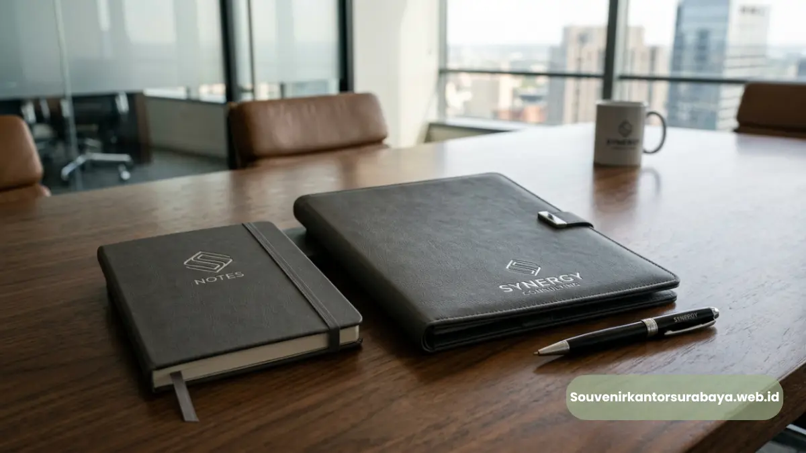
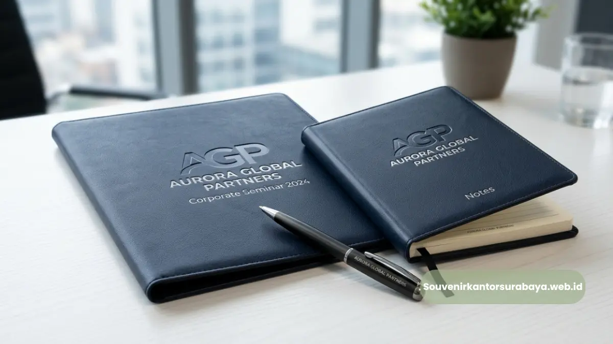
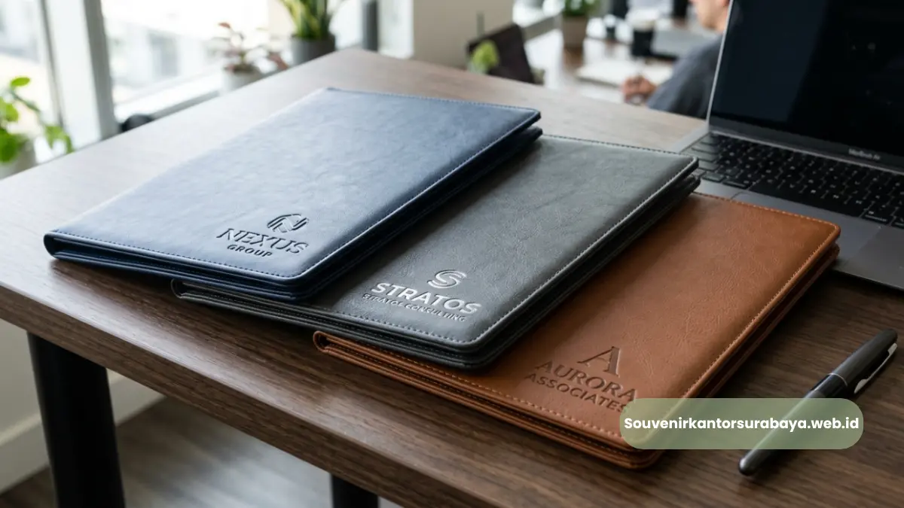
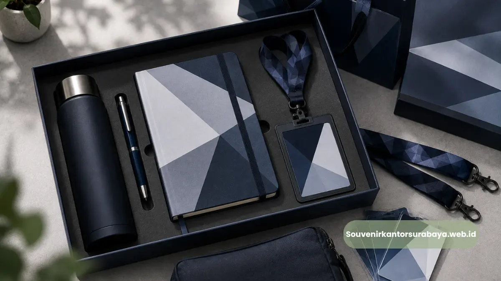

Set meeting kit lengkap paket map folder kulit sintetis dengan notes dan pena untuk rapat kerja perusahaan.
- Apa Manfaat Paket Map Folder Kulit Sintetis untuk Rapat Kerja?
- Bagaimana Paket Map Folder Membantu Efisiensi Anggaran Kantor?
- Apa Saja Komponen yang Biasa Ada dalam Paket Map Folder?
- Apakah Isi Paket Map Folder Bisa Disesuaikan?
- Kapan Waktu yang Tepat Menggunakan Paket Map Folder Kulit Sintetis?
- Bagaimana Cara Mendapatkan Paket Map Folder Kulit Sintetis untuk Kantor Anda?
Paket map folder kulit sintetis untuk rapat kerja adalah kumpulan perlengkapan meeting berbasis map kulit sintetis yang biasanya dilengkapi notes, pena, dan slot kartu nama dalam satu unit siap pakai.
Paket ini banyak dipilih perusahaan di Surabaya karena memudahkan pengadaan perlengkapan rapat tanpa harus membeli item secara terpisah. Melalui penyedia resmi seperti vendor map folder kulit sintetis rapat kerja Surabaya di souvenirkantorsurabaya.web.id, kebutuhan dokumentasi dan pencatatan selama rapat kerja bisa terpenuhi sekaligus dalam satu kali pemesanan.
- Paket map folder kulit sintetis memudahkan pengadaan perlengkapan rapat dalam satu unit.
- Umumnya berisi map, notes, dan slot pena atau kartu nama.
- Cocok dipakai untuk rapat internal, rapat dengan klien, dan pelatihan kerja.
- Bisa disesuaikan dengan identitas visual perusahaan melalui custom logo.
- Membantu efisiensi anggaran dibanding membeli perlengkapan secara terpisah.
Apa Manfaat Paket Map Folder Kulit Sintetis untuk Rapat Kerja?
Manfaat utama paket map folder kulit sintetis adalah efisiensi pengadaan, karena perusahaan tidak perlu membeli map, notes, dan pena secara terpisah untuk setiap rapat kerja.
Selain menghemat waktu koordinasi tim procurement, paket ini juga memberikan tampilan yang lebih konsisten karena seluruh komponen biasanya dirancang dengan tema dan warna yang selaras.
Bagi perusahaan yang rutin mengadakan rapat mingguan atau bulanan, memiliki stok paket map folder kulit sintetis membantu memastikan setiap peserta rapat memiliki perlengkapan yang memadai tanpa harus mempersiapkan ulang setiap kali acara berlangsung.
Bagaimana Paket Map Folder Membantu Efisiensi Anggaran Kantor?
Paket map folder kulit sintetis membantu efisiensi anggaran karena harga satu paket lengkap umumnya lebih terjangkau dibanding membeli map, notes, dan alat tulis secara terpisah dalam jumlah yang sama.
Dengan skema pemesanan dalam jumlah besar, biaya per unit juga dapat lebih hemat, sehingga cocok bagi perusahaan yang memiliki kebutuhan rutin untuk berbagai kegiatan rapat kerja sepanjang tahun.
Baca Juga
Apa Saja Komponen yang Biasa Ada dalam Paket Map Folder?
Komponen yang umum terdapat dalam paket map folder kulit sintetis meliputi map utama, notes atau block note, pena, serta slot khusus untuk kartu nama atau dokumen penting. Beberapa varian paket juga menambahkan flashdisk, kalkulator kecil, atau tempat gadget sebagai nilai tambah sesuai kebutuhan perusahaan.
- Map kulit sintetis: komponen utama sebagai wadah dokumen.
- Notes atau block note: untuk mencatat poin penting selama rapat.
- Pena: pelengkap fungsional yang biasanya disertakan dalam satu set.
- Slot kartu nama: memudahkan penyimpanan kartu identitas rekan bisnis.
- Aksesori tambahan: seperti kalkulator kecil atau tempat gadget pada beberapa model.
Apakah Isi Paket Map Folder Bisa Disesuaikan?
Isi paket map folder kulit sintetis pada umumnya dapat disesuaikan dengan kebutuhan perusahaan, baik dari sisi komponen yang disertakan maupun desain logo yang dicetak di permukaannya.
Fleksibilitas ini memungkinkan perusahaan memilih kombinasi yang paling relevan, misalnya menambahkan slot untuk tablet bagi tim yang lebih sering bekerja secara digital saat rapat.
Kapan Waktu yang Tepat Menggunakan Paket Map Folder Kulit Sintetis?
Waktu yang tepat menggunakan paket map folder kulit sintetis adalah saat perusahaan mengadakan rapat kerja rutin, pertemuan dengan klien, pelatihan internal, maupun seminar korporat yang membutuhkan perlengkapan pencatatan bagi setiap peserta.
Penggunaan paket ini juga relevan sebagai bagian dari welcome kit karyawan baru atau sebagai souvenir dalam acara resmi perusahaan.
Selain momen rutin, paket map folder kulit sintetis juga sering dipersiapkan menjelang periode rapat kerja tahunan, evaluasi kinerja, atau perencanaan strategis yang melibatkan banyak dokumen dan catatan penting.
Bagaimana Cara Mendapatkan Paket Map Folder Kulit Sintetis untuk Kantor Anda?

Paket map folder kulit sintetis siap pakai di meja rapat kerja korporat.
Perusahaan di Surabaya yang membutuhkan paket map folder kulit sintetis untuk rapat kerja dapat langsung berkonsultasi melalui souvenirkantorsurabaya.web.id mengenai komponen paket, desain custom logo, dan jumlah pesanan yang dibutuhkan.
Tim kami siap membantu menyesuaikan paket dengan kebutuhan dan anggaran perusahaan Anda.

Hawa Nadira
Tim penulis CorporateGifts ID berfokus pada strategi souvenir kantor, merchandise korporat, dan inovasi brand untuk klien B2B.
Keahlian: Branding perusahaan, produksi souvenir, paket event, desain materi promosi.
Artikel Terkait

Vendor Map Folder Kulit Sintetis Rapat Kerja Surabaya
Vendor map folder kulit sintetis rapat kerja Surabaya menyediakan perlengkapan dokumen meeting korporat dan souvenir kantor custom logo eksklusif.
Baca Selengkapnya
Perbedaan Kulit Asli dan Sintetis pada Souvenir Kantor Eksekutif
Panduan komparasi material kulit asli vs sintetis untuk menentukan pilihan souvenir kantor eksekutif yang sesuai budget dan daya tahan.
Baca Selengkapnya
Paket Seminar Kit Lengkap untuk Kantor di Surabaya
Paket seminar kit kantor Surabaya adalah satu paket perlengkapan acara yang biasanya terdiri dari lanyard, id card, notebook, dan pulpen.
Baca Selengkapnya